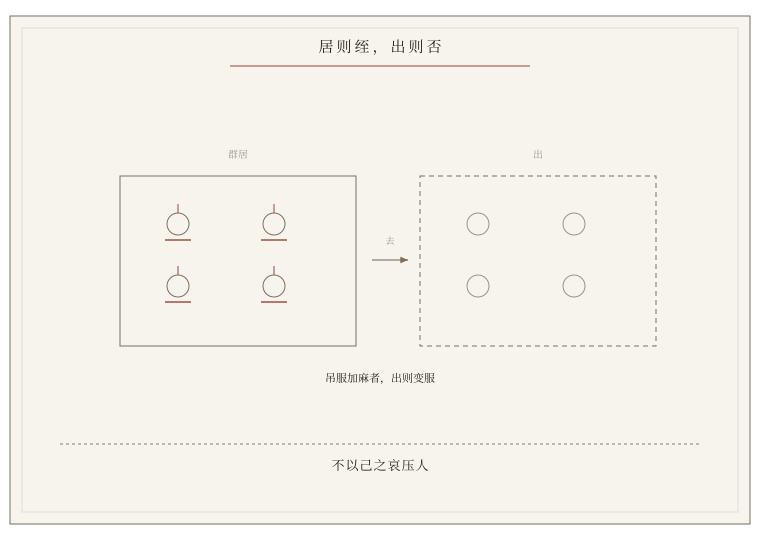

檀弓上 · 三·五十三 · 第 256 课
孔子之丧，二三子皆绖而出。群居则绖，出则否。注「尊师也」「出，谓有所之适。然则凡吊服加麻者，出则变服」「群谓七十二弟子，相为朋友服」。
说什么事：弟子为夫子服麻，聚在一处就系着，出门就解下。
落在哪一层：礼，兼及礼数与人事。
为何编在此位：上节论仇之等差，此节论服之出入。皆礼之有权。
【经】孔子之喪，二三子皆絰而出。群居則絰，出則否。
【注】尊师也。出，谓有所之适。然则凡吊服加麻者，出则变服。群谓七十二弟子，相为朋友服。
【疏】底本此节无疏文。按注「出则变服」，《丧服》「朋友麻」，师与朋友同服，故吊服加麻者出门则去之；群居则相为服，出则否。此与上节「门人疑所服」相承，明弟子于师与朋友同服而绖有出入之节。
二三子 及门诸弟子。
绖 麻带。首曰绖，腰曰带，通谓之绖。
而出 出门。注「出，谓有所之适」。
群居 众弟子聚处。
出则否 出门则不系。否，不绖也。
变服 注「凡吊服加麻者，出则变服」。出门去麻。
孔子之丧，几个弟子都系着麻绖出门。聚在一处就系着，出门就不系。
此节十四字，说两件事：出亦绖，出则不绖。看似抵牾，其实各有其地。前句「皆绖而出」，是初丧之际，虽出亦不敢去；后句「群居则绖，出则否」，是常节。故注以「尊师」冠之，又以「凡吊服加麻者出则变服」为通例。此之谓礼有暂久：一时之异，不改常度。
第一层 绖之重 绖是麻之最显者，首绖腰带皆以麻。吊服加麻，是五服之外的一层可识之服。加者，加于吊服之上，非衰也。
第二层 出与居 群居者，同门相聚，哀相接，故绖；出者，入于人间，事有他适，故去之。此与上节「心丧三年」相贯：服可去，心不去。
第三层 尊师与朋友同服 注「群谓七十二弟子，相为朋友服」。此语把弟子相为与弟子为师打并为一：其服同，其节同。疏即据此推「师与朋友同」。
第四层 变服之义 出门去麻，非慢也。入于人之庭、坐于人之席，而系衰绖，则主人不安。故吊服之麻，出门即去。此礼之体人也。
与今日何干 丧中之标识，何时戴、何时摘。此节给的尺是：在同类相聚处守其显，在众人之前去其显——不是不哀，是不以己之哀压人。
| 左 | 右 |
|---|---|
| 二三子皆绖而出 | 初丧之暂，出亦不敢去 |
| 群居则绖 | 同门相聚，哀相接 |
| 出则否 | 入于人间，事有他适 |
| 出则变服 | 吊服加麻之通例 |
| 群谓七十二弟子 | 相为朋友服 |
| 尊师也 | 一节之总 |
画一处丧次的内外，视点平。左侧一间敞屋，屋内四五位弟子围坐（衣素、腰间与头上都有麻带），彼此相对；右侧一道门，门外站着两位弟子，腰间已无麻带、只余素衣，正回望屋内。门下有一道台阶。不写文字、不画人面细节。赭色只用在屋内一人腰间的麻带与门外一人手中的麻带卷。
